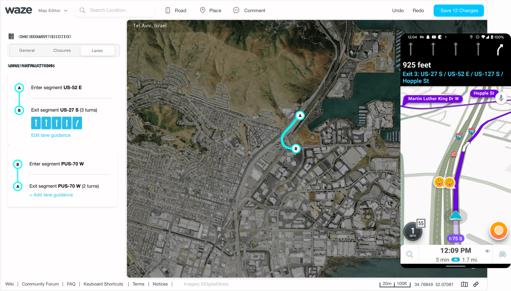
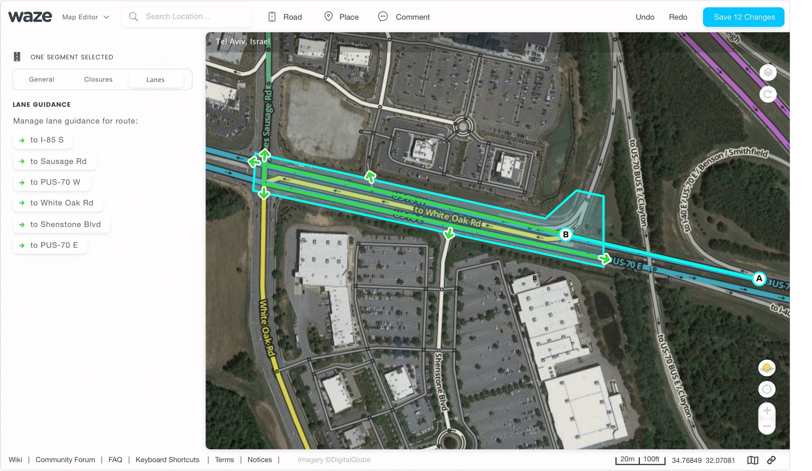
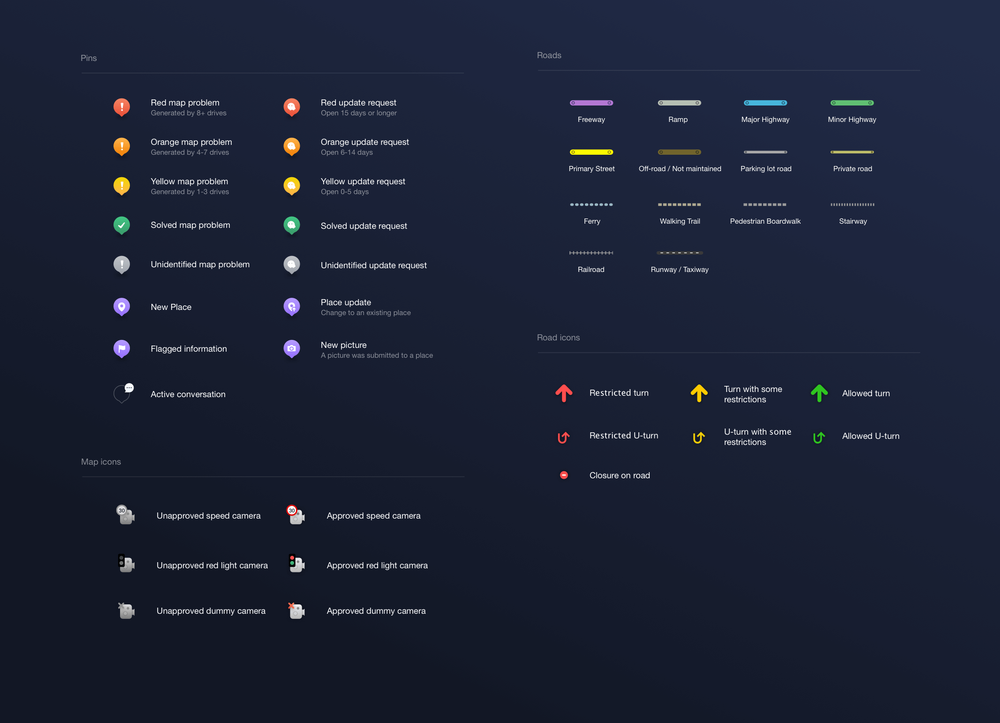

Waze Map Editor
Waze is one of the most popular navigation apps in the world. I joined as a contractor who’s in charge of its editor - a tool in which a community of volunteers from all around the world edit the map and provide most of the app’s map data.
Responsibilities
- Product Design
- UX Research
Key Learnings
Working on the Waze map editor was an unusual experience. It's a heavily used product with very invested power users, and in order to get things right, I had to deeply understand their biggest issues and expectations from the product team.
How to approach a redesign
When I joined Waze, it was very clear to the entire team that the editor needs a redesign. There was simply no room for any more new features, and there were many UI issues that were designed years ago and never changed.
The redesign was a big task of over 40 screens and states. We knew we need to build it if we want to be able to build new things upon it.
The initial feedback from the community was mixed. While some editors were happy that we're finally changing things, some complained about things like screen space, contrast and more.
This made us get back to the editing desk, and with a few simple changes like background-color change, spacing fixes, new features and performance improvement the new UI was finally adopted and implemented to everyone.
How to talk to the users
It took me a few months to really ‘see’ the people I’m designing for.
It really bothered me how outdated the website was, so I spent a lot of time on aesthetics. The team supported me and we shipped the redesign in 2 months, but instead of getting praises from the community, I got a lot of feedback about things I didn’t see as problems.
After this 'rough start' I started talking to the editors more regularly, read in their forums, and asked them to send me long recordings of them editing the map. This helped me really understand how they see the platform in their eyes.
For them, ‘good UX’ is a fast and functional interface, function over form.
When I changed my approach, it led to much more positive comments from our users, as I solved actual issues and designed things that saved them time and effort.
Spotlight Project #1: Lane Guidance
Collaborating with different stakeholders to map the lanes of the entire world
Lanes were one of the most requested features people wanted from Waze. To add lanes into the app, Waze needed its community to regularly fill in and maintain the lanes of each road in the world.
I worked with our developers to find the best solution, defined the right information structure of lanes as part of our existing database, and regularly asked for feedback from our power users to make sure the solution is the right one for our community.
The lanes feature in the mobile app was implemented after I no longer worked in Waze, and is slowly being rolled to more users.
The main design challenge was for the app to be able to ‘predict’ the best lane, according to the next 2-5 turns the driver needs to make. We solved it by using the junction feature that already existed.
The responses from the community were very positive.
The feature was immediately adopted by the community and even received its own documentation in the Wazeopedia.
Spotlight Project #2: Map Legend
To help the editors deal with all the changes, I’ve designed a fully responsive map legend. The legend shows all of the icons on the map, the editor symbols, road colors, and different types of map problems/update requests.
